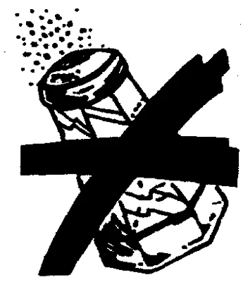
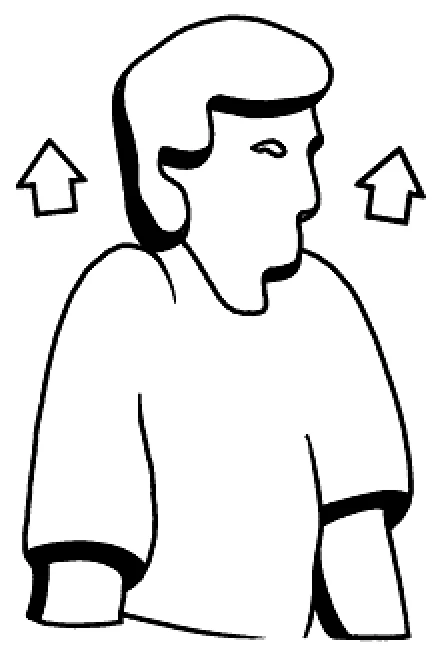

Hypertonie (Bluthochdruck)
Oft nicht erkannt, doch vielfach vorhanden und gefährlich
ALLGEMEIN: Da der Bluthochdruck in der Regel keine Beschwerden verursacht, bleibt er jahrelang unentdeckt bzw. wird vom Patienten nicht ernst genommen, (kein Leidensdruck, schädigt aber das Gefäßsystem). Er tut nicht weh und oft ahnen viele Patienten lange nicht, dass sie einen zu hohen Blutdruck haben. Ein hoher Blutdruck ist eine tickende Zeitbombe und macht krank. Langfristig drohen Herzschwäche, Demenz, Schlaganfall und Nierenversagen. In Deutschland ist Bluthochdruck die zweithäufigste Todesursache. Hypertonie ist eine Regulationsstörung im arteriellen Bereich des Kreislaufsystems. Laut WHO (Weltgesundheitsorganisation) spricht man von Bluthochdruck (Hypertonie), sobald der Blutdruck ständig >140/90mm Hg liegt. Dabei wird der erste, höhere Wert (systolischer Druck) gemessen, wenn sich das Herz zusammenzieht und das Blut in den Körper gedrückt wird. Der zweite, niedrigere Wert (diastolischer Druck) zeigt den Blutdruck an, nachdem der Herzmuskel wieder erschlafft ist. Auf diese Werte sind alle Blutdruckmessgeräte amtlich geeicht. Es gibt keine natürliche Grenze. Was zählt, ist das Gesamtrisiko aus: Blutdruck, Alter, Geschlecht, weiteren genetischen Komponenten und Lebensstil, die sich teilweise gegenseitig beeinflussen. Und das nicht nur bei der Diagnose. Erfahrungsgemäß liegen die bei älteren Personen gemessenen Blutdruckwerte im Durchschnitt über denjenigen von Jugendlichen. Das heißt aber nicht, dass der Blutdruck bei jedermann mit zunehmendem Alter steigen muss. Die Norm ist der bis ins hohe Alter gleichbleibende Blutdruck, wobei der untere Wert nicht über 90 mm Hg liegen soll. Ideale Blutdruckwerte: 120/80 mm Hg. Allerdings gelten Abweichungen bei bestimmten Personengruppen als akzeptabel. So ist etwa bei Patienten, die älter als 80 Jahre sind, ein systolischer Blutdruck zwischen 140 und 150 mm Hg tolerabel. Die Blutdruckmessung soll auf Herzhöhe erfolgen, vor der Messung 5 Minuten ruhen. Aufrecht sitzen und sich anlehnen. Ohne Lehne muss sich der Körper anspannen, das alleine erhöht den Wert um etwa 5 mm Hg. Ebenfalls tabu: Die Beine überschlagen, weil dabei die Gefäße zusammengedrückt werden, erhöht das den Druck. Hinweis: Morgens zwischen 8-9 Uhr sowie zwischen 16-18 Uhr sind die Werte am höchsten. Nachts ist er auf dem niedrigsten Stand (tagesrhythmisch). Sinnvoll ist sie nur dann, wenn auch häufiger gemessen und ein Durchschnitt errechnet wird. Starke Schwankungen sind erste Warnzeichen. Bei einem hohen Blutdruck ist das Risiko für einen Herzinfarkt 3 x und für einen Schlaganfall 8 x höher. Hält hoher Blutdruck schon länger an, verursacht er eine Verkalkung der Arterien (siehe Arteriosklerose).
URSACHEN: Bewegungsmangel, wer täglich 10.000 Schritte geht, senkt den Blutdruck, halbiert das Risiko einer Herzerkrankung und vermindert die Gefahr, einen Schlaganfall zu erleiden oder an Diabetes zu erkranken. Wind und Wetter spielt keine Rolle - Hauptsache Bewegung.
- Bei blasser Hypertonie Nieren behandeln. Hoher Salzkonsum (mehr als 1 Teelöffel/Tag). Schilddrüsenüberfunktion. Organismus entsäuern. Zu viel Säure führt zu einem Anstieg des Blutdrucks. Hohe Cholesterinwerte (Hauptursache für altersbedingte Hypertonie ist eine Verunreinigung der Blutgefäße mit Cholesterin sowie ein Vitamin E- und Kalium-Mangel. Gluten-Unverträglichkeit (Weizen meiden).
- Durch Schnarchen gelangt zu wenig Sauerstoff ins Blut, wodurch der Blutdruck enorm ansteigt. Auch ein Schlafapnoe - Syndrom, das mit nächtlichen Atemaussetzern einhergeht, zählt zu den möglichen Ursachen. Diabetes, Lipasemangel (Avocado essen).
- Bei Männern, die unter einem Vitamin D-Mangel leiden, besteht ein um mehr als 6-fach gesteigertes Risiko, Bluthochdruck zu entwickeln. Bei Frauen ist das Risiko um das 2,7-fache höher (Health-Study, siehe Osteoporose). Je weiter wir uns vom Äquator entfernen, (Sonne bzw. Vitamin D Mangel), desto häufiger wird Bluthochdruck festgestellt. Er ist oft auch eine körperliche Reaktion auf psychische Schmerzen, wie Angst, Depression, Stress, Streit, Ärger. Amalgam/Zähnen entfernen lassen.
- Entzündungen im Mundraum. Nach erfolgreicher Parodontitis-Behandlung sinkt der Blutdruck wieder, wie Studien zeigen. Gewissenhafte Mundpflege kann vor Hypertonie schützen.
- Therapieresistente Hochdruckpatienten sollten sich auf ein Conn-Syndrom (Erkrankung der Nebenniere) testen lassen (Arzt). Die Nebennierenrinde produziert zuviel Aldosteron. Es hält Natrium- und Wasser im Körper fest (Aldosteron-Blocker/Arzt befragen).
- Magnesium-/Kieselsäuremangel. Ältere Menschen, die unter Bluthochdruck leiden, haben 10 x weniger Silicium in den Gefäßen, als Jüngere. Störungen im Hormonhaushalt.
- Bei 90 % der Patienten ist keine Ursache auffindbar. Bei einem sekundären Bluthochdruck, Nieren untersuchen lassen. Sie klagen über Muskelkrämpfe, die durch Kalium-Mangel ausgelöst werden.
- Übergewicht: Bei einem Body-Maß-Index (BMI) von 25 und mehr (siehe Übergewicht) kann der Blutdruck pro abgenommenen Kilogramm um ca. 2 mm Hg gesenkt werden. Hoher Blutdruck ist ein Produkt von genetischer Veranlagung und Lebensstil. Wenn der Taillenumfang bei Frauen 88 cm und bei Männern 102 cm überschreitet, werden diese Gene vermehrt aktiviert. Langsam essen, gründlich kauen. Das Sättigungsgefühl tritt erst nach 20 Minuten ein.
- Ungesunde Lebensweise (zu viel Alkohol und Nikotin). Jede Zigarette verkürzt das Leben eines gesunden Menschen. Daran sollten Sie denken, wenn Sie sich die Nächste anzünden.
- Niedriger Vitamin C + E-Spiegel im Blut. Wenn Sie gängige Schmerzmittel wie ASS, Paracetamol oder Ibuprofen regelmäßig über einen längeren Zeitraum einnehmen, können diese hohen Blutdruck auslösen (Harvard-Uni).
- Kälte verengt die Gefäße: Temperaturen runter, Blutdruck rauf! Ältere Menschen sind Studien zufolge von diesem saisonalen Blutdruckanstieg stärker betroffen, als jüngere. Besonders, wenn die Werte ohnehin schon zu hoch sind, kann das die Gesundheit gefährden. So kommt es im Winter zu deutlich mehr Schlaganfällen und Herzinfarkten, als im Sommer. Jede 3 °C unter Null erhöht den Blutdruck um 10 % (Schwedische Studie vom 09.02.2021, NDR Visite). Immer durch die Nase einatmen, damit die Luft vorgewärmt wird.
SYMPTOME: Unruhe und Nervosität, Kopf- und Herzschmerzen, Schlaf- und Sehstörungen. Atemnot, Engegefühl in der Brust, Angstzustände, Schwindel, Ohrensausen, Benommenheit bei plötzlichem Blutdruckabfall. Übelkeit, Nasenbluten. Warnzeichen: Geplatzte Äderchen/Augapfel. Da das Herz (Blutgefäße) dauernd überlastet ist, kann es zu den gefürchteten Spätschäden wie z.B. Herzinfarkt und Schlaganfall, sowie Durchblutungsstörungen und Nierenversagen kommen.
Kontrollieren Sie daher Ihren Blutdruck regelmäßig
ERNÄHRUNG: Durch Fasten geht der Blutdruck phantastisch herunter. Zunächst mit Saftfasten oder Rohkost den Stoffwechsel entlasten. Dann salzarme, vegetarische Vollwertkost bevorzugen. Die Speisen werden fast ebenso schmackhaft mit Paprika, Pfeffer, Ingwer, Thymian, Majoran, Petersilie (mit Stängel), Basilikum, Meerrettich, Dill und Knoblauch/Zwiebeln zubereitet. Chili: Der Scharfmacher Capsaicin hat eine entspannende Wirkung auf die Gefäße. Diesen Effekt können Sie sich in der Blutdrucktherapie zu Nutze machen. Einfach eine Prise Chili übers Essen streuen. Essen ohne Chili, ist wie Liebe ohne Küssen (Mexikanisches Sprichwort). Erhöhung des Kaliumanteils in der Nahrung: Je höher der Kaliumspiegel, umso niedriger der Blutdruck und umgekehrt. Dieses Mineral hilft dem Körper, das blutdrucktreibende Natrium zu mindern (sogenannte Antagonisten). Daher viel Honig - zu jeder Mahlzeit 1 Teelöffel -, Obst (Wassermelonen), Äpfel (Boskop), Blaubeeren, Ananas, Kiwis, Bananen (täglich 500 g - Harvard-Uni), Feigen, getrocknete Aprikosen oder Rosinen essen. Nitratreiches Gemüse (Brokkoli, Möhren, Spinat, Spargel, Bohnen, Rot- und Weißkohl, Kohlrabi, Radicchio, Rucola, Mangold, Pastinaken, Rote Bete). Es enthält viel Nitrat, das im Körper - im Gegensatz zu Fleischprodukten - in Stickstoffmonoxyd umgewandelt wird und dadurch den Blutdruck senkt. Rote Bete hat eine Wirkung, wie ein blutdrucksenkendes Medikament (Prof. Michalsen, Charité Berlin). 1-2 Knollen täglich essen oder ¼ -½ Liter Saft trinken (nicht bei Gallen- und Nierensteinen). Kombinieren Sie rote Bete mit Vitamin C. So kann der Körper das pflanzliche Eisen besser aufnehmen. Sie gilt auch als Naturdoping. Naturreis oder Kartoffeldiät einplanen, z.B. 7 Tage Kartoffelkost: Das Frühstück besteht aus Misteltee, mittags und abends gibt es 200 g Kartoffeln (mit Schale und ohne Salz zubereitet), 10 g Butter, Küchenkräuter können jedoch zugesetzt werden. Müsli mit Haferbrei. Täglich eine Handvoll Walnüsse essen (Alpha Linolensäure), Shiitake-Pilze (Beratung/Bezug). Öfter mal Lebensmittel aus Soja essen. Sie enthalten Daidzein und Genistein und verhindern, dass sich Cholesterin an den Arterienwänden absetzt. Schon 50 g Tofu täglich senken den Blutdruck um 10 %. Morgens nüchtern drei ungeschälte süße Mandeln essen. Bitter-Schokolade > 70 % Kakaoanteil, senkt den Blutdruck (maximal 30 g täglich). Buchweizen ist gut für die Gefäße/Arterien. Viel Knoblauch, Kürbis- und Pinienkerne, Zwiebeln, Bärlauch, alle Laucharten, Staudensellerie, Weizenkeime, Blütenpollen, Bierhefe, Quark, Artischocken und Haferflocken verzehren. Sie halten die Gefäße elastisch und senken den Blutdruck. Wer 3 x täglich je eine bis zwei Scheiben Vollkornbrot zu sich nimmt, senkt einer schottischen Studie zu Folge seinen Blutdruck in gleichem Maße wie entsprechende Medikamente. Naturjoghurt: Er fördert nicht nur eine gesunde Darmflora – laut einer amerikanischen Studie verringert er auch das Risiko für erhöhte Blutdruckwerte um circa 31 %. Für diesen Gesundeffekt genügen schon 2 Becher à 200 g/Woche. Ihre Milchsäurebakterien verhindern im Darm offenbar, dass der Salzkonsum einen negativen Einfluss auf den Blutdruck ausübt. Täglich eine Portion Fisch (Lachs, Hering, Thunfisch, Makrele) oder 1 Esslöffel Leinöl (Omega-3-FS) essen. Rapsöl lässt das Blut besser fließen und senkt den Blutdruck. Hühnersuppe hilft nicht nur bei Erkältungen, sondern kann auch den Blutdruck senken (Japanische Studie). Die Geflügelteile enthalten Eiweiße, die ähnlich wirken, wie ACE-Hemmer.
Eine strikt fett- und salzarme Ernährung (höchstens 6 g/Tag, mindestens aber 4,5 g/Tag) in Verbindung mit viel Bewegung, senkt erhöhte Blutdruckwerte fast genauso gut wie Beta-Blocker oder andere synthetische Medikamente. Arginin: Aus dieser natürlichen Nahrungsaminosäure wird im Körper der gefäßerweiternde und blutdruckregulierende Botenschaft Stickstoffmonoxid (NO) - zumindest in jungen Jahren - gebildet. In folgenden Nahrungsmitteln findet sich Arginin in größeren Mengen: Hülsenfrüchte, Nüsse, Vollkornreis, Sonnenblumenkerne, rote Trauben, Heidelbeeren, grünes Blattgemüse, Weißdorn, rote Bete. Hinweis: Patienten, die mit blutverdünnenden Arzneimitteln behandelt werden (z.B. Marcumar), sollten diese Nahrungsmittel nur nach Rücksprache mit dem Arzt verzehren.
MEIDEN:Weizen (Glutenintoleranz), Tyraminhaltige Nahrungsmittel (z.B. Käse, insbesondere Emmentaler, Tilsiter, Camembert, Schinken, Salami, Sauerkraut, Orangen, Avocados).Sie setzen ein Hormon der Nebennierenrinde (Noradrenalin) frei, welches blutdrucksteigernd wirkt. Kaffee: Hier streiten sich die Fachleute, als vertretbare Richtlinie gelten 4 Tassen täglich, ohne das der Blutdruck stark ansteigt. Alkohol, Nikotin, Übergewicht. Salz, maximal 6 g täglich.

Salzreiche Dosengerichte wie Wurst- und Fischkonserven, Pökelwaren, Snacks vom Speiseplan streichen. Dies gilt für Menschen, die darauf besonders empfindlich reagieren. Ansonsten ist Salz ein wichtiger Mineralstoff, auch zur Stabilisierung eines unregelmäßigen Herzschlages. Zuckerkonsum reduzieren. Patienten, die viel Fruchtzucker zu sich nehmen, haben nachweislich ein höheres Risiko, Bluthochdruck zu entwickeln. Tierisches Fett/Eiweiß (Fleisch, Wurst, Eier) meiden. Vegetarier haben im Durchschnitt weniger Probleme mit hohem Blutdruck als Fleischesser. Schwarzer Tee, Lakritz. Aspartam (NutraSweet, Canderel, Light-Produkte, E951), Omega-6-FS (siehe Öle/Fette). Glutamat (E620 – E623) in Fertiggerichten und Gewürzmischungen/Geschmacksverstärkern treibt den Blutdruck hoch. Grapefruit hemmt den Abbau von Blutdrucksenkern.
GETRÄNKE: Viel trinken, damit das Blut flüssig bleibt, sofern Ihr Herz/Arzt nichts dagegen hat. Hoher Blutdruck kann entstehen, wenn der Körper den Wassermangel dadurch auszugleichen versucht, indem er den Querschnitt der Blutgefäße verringert, um sich an die unzureichende Blutmenge anzupassen. Empfehlenswert sind stille Wässer mit viel Kalium. Naturtrüber Apfelsaft, Kakao. Schon im Mittelalter galt das Herzgespannkraut (Leonurus cardiaca/Apotheke als Blutdrucksenker. Misteltee: 1 Esslöffel mit 1 Tasse (150 ml) siedendem Wasser übergießen und 10-15 Minuten abgedeckt stehen lassen. Anschließend durch ein Sieb abgießen. Apfelessig-Misteltrunk: Je 1 Esslöffel Apfelessig und Mistelkraut, sowie 1 Teelöffel Honig in 250 ml Wasser gut einrühren, über Nacht stehen lassen, absieben und gekühlt über den Tag verteilt trinken. Alternativ: Mistelsaft/Reformhaus. Apfelessig und Honig (je 1 Esslöffel) in 1 Glas mit 0,2 Liter Wasser geben, verrühren und in kleinen Schlucken vor den Mahlzeiten trinken. Das enthaltene Kalium regt die Salzausscheidung an und entlastet das Herz. Pfefferminztee, 3 x täglich 1 Tasse drei Wochen lang. Sehr gut ist Grüner Tee. Er wirkt ausgleichend auf den Kreislauf, regelt den Cholesterinspiegel und wirkt somit gegen Hypertonie und Arteriosklerose. Pampelmusen-, Granatapfelkonzentrat (täglich 10 ml), Kefir trinken. 1 Teelöffel warmes Wasser mit einer Messerspitze Chili- oder Cayennepulver gut einspeicheln und hinunterschlucken. Innerhalb weniger Minuten soll der Blutdruck sinken/ausprobieren. Knoblauch-Zitronenkur durchführen. Hibiskus-Tee schützt die Gefäße, 3 x täglich 1 Tasse senkt den oberen Blutdruck-Wert nach 6 Wochen um bis zu 13,2 mm Hg (Studie der Tufts University, Boston). Rote Bete-Saft (täglich ¼ Liter). Hinweis: Er enthält viel Oxalsäure, bei Gallen- und Nierensteinen nicht anwenden, Arzt befragen. Wer von Bluthochdruck betroffen ist, darf sich durchaus Kaffee gönnen. Denn: Die Annahme, dass das Koffein bei Bluthochdruck schädlich sei, konnten wissenschaftliche Untersuchungen nicht bestätigen. Wer seine Herzgesundheit im Blick hat, sollte laut Deutscher Herzstiftung am Tag maximal 400 ml Koffein zu sich nehmen, das entspricht 4-5 Tassen Kaffee.
BÄDER: Kaltes Armbad: Beide Unterarme mehrmals täglich 5-20 Sekunden in kaltes Wasser tauchen oder einfach kaltes Wasser über das Handgelenk laufen lassen. Wechselwarme Waschungen, Wechselknieguss, Luftsprudel-, Kohlensäurebäder. Wassertreten in kaltem Wasser (Pfarrer Kneipp). Hydrotherapie macht fit. Warm, kalt, warm, kalt: Wechselduschen und Kneipp-Güsse mag nicht jeder, aber die Gefäße profitieren davon. Die Temperaturreize trainieren ihre Elastizität, mit der Zeit sinkt der Blutdruck, der Herzschlag verlangsamt sich, wie Studien belegen. Wichtig dabei: Regelmäßigkeit zahlt sich aus, also am besten täglich „kneippen“. Füße in warmem Wasser baden, um den Druck von oben nach unten zu nehmen. Ab in die Badewanne: Wissenschaftler der medizinischen Poliklinik der Charité in Berlin haben herausgefunden, dass 2 warme Vollbäder (ca. 40 °C) pro Woche den Blutdruck auf natürliche Weise senken. Vorsicht bei Patienten mit Herz- Kreislaufstörungen. Bäder mit Zusatz von Melissen-, Lavendel- oder Baldrianextrakt.
THERAPIE: Moderate Ausdauersportarten betreiben (Schwimmen, Rudern, Nordic Walking, Laufen ohne zu Schnaufen). Spaziergänge (30 Minuten täglich), am besten morgens (US-Studie) senken den Blutdruck. Kräftig ausatmen, Körper warmhalten, Entspannung, ausgeglichene Lebensweise, Hetze und Stress meiden. Setzen Sie sich nicht unter Druck. Für regelmäßigen Stuhlgang sorgen. Kopfende/Bett 20 cm höher stellen. Ausreichender Schlaf: Idealerweise sollten Hochdruck-Patienten auf der linken Seite schlafen. Man unterstützt so das Herz bei seiner Arbeit, weil das Blut nicht gegen die Schwerkraft nach oben gepumpt werden muss, sondern einfach nach unten fließen kann. An – und Entspannung: Hier eine hochwirksame Sekundenübung. Beide Handflächen vor der Brust fest gegeneinander pressen. Die Unterarme sind dabei waagerecht. 10 Sekunden halten, dann lösen. 3 x wiederholen. Bei Herzrasen und schnellem Puls: Nase zuhalten und bei geschlossenem Mund Luft in die Nase pressen, diesen Druck einige Sekunden aufrecht halten. Kleine Übung: Kopf nach links drehen, beide Schultern hochziehen, tief einatmen, Luft anhalten und bis 10 zählen, Schultern wieder fallen lassen und ausatmen. Diese Übung 5 x wiederholen.

Akupressur: Leber 3 (Akupunkturpunkt am Fuß - siehe Leber) ca. 1-2 Minuten akupressieren (Wunderpunkt gegen Hypertonie). Wirbelsäule (1./4. Hals-, sowie 2. Brustwirbel) überprüfen lassen (siehe Dorn). Nieren massieren bzw. warmhalten. Viel Bewegung an frischer Luft. Aderlass: 250 – 300 ml. Bei Patienten mit Übergewicht und zu viel Eisen im Blut. Die Wirkung hält circa drei Monate an (rbb Praxis vom 16.10.2019), Arzt befragen. Sonstiges: Sprechen Sie langsamer, Schnellsprecher atmen oft nicht richtig und das kann zu erhöhtem Blutdruck führen. Wenn Sie 10 Minuten nicht sprechen, sinkt der Blutdruck. Gut, gut ausatmen, so als wolle man eine Feder wegblasen. Lachen ist die beste Medizin und wirkt so gut wie eine Entspannungsübung. Stress, aber auch Gefühle wie Wut lassen den Blutdruck in die Höhe schnellen und belasten das Herz. Dagegen hilft: Im Liegen 4 Sekunden ein- und 7 Sekunden ausatmen, täglich 11 Minuten lang. Das ruhige, tiefe Atemtempo entspannt Geist und Körper und hilft in stressigen Momenten. Händchenhalten beruhigt das Herz und senkt den Blutdruck. Glückliche Paare haben einen niedrigeren Blutdruck als andere, das haben Forscher der Brigham Young University in Utah festgestellt. Menschen mit regelmäßigem Körperkontakt weisen niedrigere Blutdruckwerte auf. Auch regelmäßiger Sex wirkt sich positiv aus und schon ein leidenschaftlicher Kuss reduziert die Stresshormone und senkt damit den Blutdruck. Der Mensch kann auf Hören und Sehen verzichten, aber ohne Berührung überlebt er nicht. Midas-Effekt: Er besagt, dass Berührungen Menschen großzügiger machen/Trinkgeld. Patienten nehmen ihre Medikamente regelmäßig ein, wenn der Arzt sie bei der Verordnung kurz am Arm berührt. Äußerer Druck erzeugt inneren Druck. Das was Sie schon lange tun wollten oder sollten, endlich tun, dann ist schon viel Druck weg. Musik-Therapie: Schöne Klänge (täglich ½ Stunde) können den Blutdruck senken. Ein kurzes Nickerchen nach dem Essen senkt den Blutdruck um durchschnittlich 5 mm Hg. Das fanden jetzt Forscher heraus. Waldspaziergänge: In Japan ist das sogenannte „Waldbaden“ Teil der Gesundheitsfürsorge. Natur beruhigt und senkt den Blutdruck.
MEDIKAMENTE: Verordnete Medikamente möglichst morgens und mittags einnehmen (siehe Chronologie). Sie dürfen ohne ärztliche Rücksprache nicht abgesetzt werden. Vorsicht vor Kalzium Blocker: Sie haben keine medikamentöse Wirkung bei milder Hypertonie, Cocheren Studie (ARTE Xenius). Zur Unterstützung können jedoch folgende Präparate eingenommen werden: Weißdorn (z.B. Natucor® 450 mg, 2 x 1 Kapseln täglich) entspannt die Gefäße, senkt den Gefäßwiderstand und reguliert den Blutdruck. TELCOR® Arginin plus Filmtabletten. Magnesium (300-400 mg täglich), Kalcium (ca. 1 g täglich), Vitamin E+C (z.B. Evina® Kapseln, 2 x täglich 1 Kapsel). Olivenblatt-Kapseln PZN 4438420. Pascoflair® 425 mg (3 x 1) bei stressbedingtem Bluthochdruck. Vitamin D3 plus K 2 Tropfen/Tabletten, senkt sowohl den systolischen als auch den diastolischen Blutdruck. Arzt/Heilpraktiker befragen. Homöopathisch: Spenglersan® Kolloid A (3 x täglich 5-10 Sprühstöße mindestens 6-12 Wochen in die Ellenbeuge oder auf das Brustbein/Bereich der Herzspitze - sogenannte Erb’scher Punkt - einreiben), Homeotensin®Tropfen, Aconitum D6 - D30 (bei Angst/Depression - Arzt/Heilpraktiker befragen). Auricularia, Reishi, Shiitake Heilpilzkapseln (Beratung/Bezug). Weitere Hinweise siehe Arteriosklerose. Info: www.hochdruckliga.de